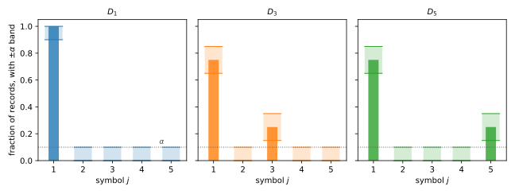

11 Packing Lower Bounds
Every chapter so far has given an algorithm and proved how much data it needs. This chapter asks the reverse question: could a cleverer algorithm need less? For pure differential privacy (DP), a short argument called packing answers it. If an algorithm is accurate, it must put its output in a different region for each of many datasets. If it is private, its output distribution barely moves between those datasets. Both can hold only when the dataset is large enough.
The argument gives lower bounds that hold for every \(\varepsilon\)-DP algorithm, however it is built. Applied to one-way marginals and to histograms, it shows that the simple Laplace-noise algorithms are optimal up to a constant or a logarithmic factor, and that pure DP is strictly more expensive than approximate DP for these problems.
11.1 Two problems and their upper bounds
Both problems ask for many counting queries at once, answered as fractions of the dataset. The first has records that are \(d\) yes-or-no answers, and asks for the fraction of yes answers to each question.
Definition 11.1 (One-way marginals) Let \(\mathcal X = \{0,1\}^d\). For a record \(x_i\), write \(x_{ij}\) for its coordinate \(j\). The one-way marginals of a dataset \(D \in \mathcal X^n\) are the \(d\) averages
\[ f_j(D) = \frac1n \sum_{i=1}^n x_{ij}, \qquad j = 1, \dots, d . \tag{11.1}\]
The second problem has records that are symbols from a finite set, and asks for the fraction of records equal to each symbol.
Definition 11.2 (Histogram) Let \(\mathcal X = [k] = \{1, \dots, k\}\). The normalized histogram of a dataset \(D \in [k]^n\) is the vector \(h(D) \in [0,1]^k\) with coordinates
\[ h_j(D) = \frac1n \sum_{i=1}^n \mathbf 1[x_i = j], \qquad j = 1, \dots, k , \tag{11.2}\]
where \(\mathbf 1[x_i = j]\) is \(1\) if record \(i\) equals \(j\) and \(0\) otherwise.
For both problems, an answer \(y\) is judged by its worst coordinate, the \(\ell_\infty\) error \(\max_j |y_j - f_j(D)|\). So an answer with error at most \(\alpha\) gets every query right to within \(\alpha\) at once.
The upper bounds come from the Laplace mechanism. Suppose the vector of answers \(f\) has \(\ell_1\) sensitivity at most \(\Delta_1 f\), which means that \(\sum_j |f_j(D) - f_j(D')| \le \Delta_1 f\) for all neighbours \(D \sim D'\), datasets that differ in one record (the replace-one relation). The Laplace mechanism releases \(f(D) + (Z_1, \dots, Z_d)\), where the noise terms \(Z_j\) are independent Laplace variables with scale \(\Delta_1 f/\varepsilon\), and it is \(\varepsilon\)-DP. The analysis needs only the tail of a Laplace variable \(Z\) with scale \(b\), which for every \(s \ge 0\) is
\[ \Pr[|Z| \ge s] = e^{-s/b} . \tag{11.3}\]
Computing the \(\ell_1\) sensitivity of each problem and applying this tail to every coordinate gives the two upper bounds that the rest of the chapter tries to beat.
Proposition 11.1 Let \(\varepsilon > 0\), \(\alpha > 0\) and \(\beta \in (0,1)\). With probability at least \(1 - \beta\):
- the Laplace mechanism for the \(d\) one-way marginals, with scale \(d/(n\varepsilon)\), has error at most \(d\ln(d/\beta)/(n\varepsilon)\);
- the Laplace mechanism for the histogram over \([k]\), with scale \(2/(n\varepsilon)\), has error at most \(2\ln(k/\beta)/(n\varepsilon)\).
Both are \(\varepsilon\)-DP. So error at most \(\alpha\) with probability at least \(1/2\) needs only
\[ n \ge \frac{d \ln(2d)}{\alpha\varepsilon} \quad \text{for marginals}, \qquad n \ge \frac{2\ln(2k)}{\alpha\varepsilon} \quad \text{for histograms}. \tag{11.4}\]
Proof.
- Sensitivity of the marginals. Replacing one record changes each average \(f_j\) by at most \(1/n\), so the \(\ell_1\) sensitivity of \((f_1, \dots, f_d)\) is at most \(d/n\). The Laplace mechanism with scale \(d/(n\varepsilon)\) is therefore \(\varepsilon\)-DP.
- Sensitivity of the histogram. Replacing a record equal to \(a\) by a record equal to \(a' \ne a\) lowers \(h_a\) by \(1/n\) and raises \(h_{a'}\) by \(1/n\), so the \(\ell_1\) sensitivity of \(h\) is \(2/n\). The scale \(2/(n\varepsilon)\) gives \(\varepsilon\)-DP.
- Union bound. For \(m\) Laplace variables with scale \(b\), the chance that some \(|Z_j|\) is at least \(s\) is at most \(m e^{-s/b}\). Setting this equal to \(\beta\) gives \(s = b \ln(m/\beta)\). With \(m = d\) and \(b = d/(n\varepsilon)\) this is claim 1, and with \(m = k\) and \(b = 2/(n\varepsilon)\) it is claim 2.
- Sample size. Each error bound is at most \(\alpha\) exactly when \(n\) satisfies Equation 11.4 with \(\beta = 1/2\).
Approximate DP does better on both problems. For the marginals, the Gaussian mechanism of the approximate DP chapter uses the \(\ell_2\) sensitivity \(\sqrt d/n\) instead of the \(\ell_1\) sensitivity \(d/n\), and needs \(n\) only of order \(\sqrt{d \ln(1/\delta)\ln d}/(\alpha\varepsilon)\), a factor of about \(\sqrt d\) less. For histograms, the stability-based histogram of the previous chapter needs \(n\) of order \(\ln(1/\delta)/(\alpha\varepsilon)\) when \(\delta \le 1/n\), with no dependence on \(k\) at all. The rest of the chapter shows that under pure DP neither gain is possible.
11.2 The packing argument
The name comes from packing rigid balls into a box. The balls cannot overlap, so only a limited number fit. Here the balls are regions of the output space, one for each of many datasets. Accuracy forces each dataset to send its output into its own region, and the regions do not overlap. Privacy forces every dataset to give every region some probability. The probabilities of disjoint regions add up to at most \(1\), so only a limited number of datasets can be packed.
The tool that connects datasets far apart is group privacy, from the Laplace mechanism chapter. The Hamming distance between two datasets in \(\mathcal X^n\) is the number of records in which they differ. Group privacy says that an \(\varepsilon\)-DP mechanism \(M\) is \(t\varepsilon\)-DP for datasets at Hamming distance at most \(t\). So for such datasets \(D\) and \(D'\) and every event \(S\),
\[ \Pr[M(D) \in S] \le e^{t\varepsilon}\, \Pr[M(D') \in S] . \tag{11.5}\]
11.2.1 A first example: the mode
The simplest instance of the argument is the mode of a dataset over \([k]\), the most frequent symbol. Take the \(k\) datasets \(D_1, \dots, D_k\), where \(D_j\) consists of \(n\) copies of the symbol \(j\). The mode of \(D_j\) is \(j\), and any two of these datasets are at Hamming distance \(n\). An accurate mechanism must answer \(j\) on \(D_j\) at least half the time, for every \(j\). Group privacy then forces each answer \(j\) to keep some probability on every other dataset as well, and \(k\) such probabilities cannot all fit into a total of \(1\) unless \(n\) is large.
Proposition 11.2 (Lower bound for the mode) Let \(k \ge 2\) and \(\varepsilon > 0\), and for each \(j \in [k]\) let \(D_j\) be the dataset of \(n\) copies of the symbol \(j\). Let \(M \colon [k]^n \to [k]\) be \(\varepsilon\)-DP, and suppose that \(\Pr[M(D_j) = j] \ge 1/2\) for every \(j \in [k]\). Then
\[ n \ge \frac{\ln(k/2)}{\varepsilon} . \tag{11.6}\]
Proof.
- Pigeonhole. Fix any \(j\). The \(k\) probabilities \(\Pr[M(D_j) = \ell]\), for \(\ell \in [k]\), sum to \(1\). So at least one symbol \(\ell\) has \(\Pr[M(D_j) = \ell] \le 1/k\), since otherwise the sum would exceed \(1\).
- Accuracy. The mechanism is correct on \(D_\ell\) with probability at least \(1/2\), so \(\Pr[M(D_\ell) = \ell] \ge 1/2\).
- Group privacy. The datasets \(D_\ell\) and \(D_j\) are at Hamming distance at most \(n\). By Equation 11.5 with the event \(\{\ell\}\),
\[ \frac12 \le \Pr[M(D_\ell) = \ell] \le e^{n\varepsilon}\Pr[M(D_j) = \ell] \le \frac{e^{n\varepsilon}}{k} . \tag{11.7}\]
- Rearranging. The chain gives \(e^{n\varepsilon} \ge k/2\), and taking logarithms gives \(n\varepsilon \ge \ln(k/2)\).
So a private mode needs a number of records of order \(\ln k/\varepsilon\). With \(k = 1{,}000\) symbols and \(\varepsilon = 1\), the bound is \(\ln 500 = 6.21\), so no \(1\)-DP algorithm finds the mode reliably from \(6\) records.
11.2.2 The packing theorem
The proof used three things: many datasets, disjoint sets of correct answers, and group privacy across a bounded distance. The theorem below keeps exactly these. It also lets the datasets be close to one common centre \(D\), at distance \(t\) that may be much smaller than \(n\), which the histogram bound will need.
Theorem 11.1 (Packing) Let \(D_1, \dots, D_m \in \mathcal X^n\) be datasets, each at Hamming distance at most \(t\) from a fixed dataset \(D \in \mathcal X^n\). Let \(Y_1, \dots, Y_m\) be pairwise disjoint subsets of the output space \(\mathcal Y\). If \(M\colon \mathcal X^n \to \mathcal Y\) is \(\varepsilon\)-DP and, for some \(p > 0\),
\[ \Pr[M(D_\ell) \in S_\ell] \ge p \qquad \text{for every } \ell \in [m], \tag{11.8}\]
then
\[ \frac1m \ge p\, e^{-t\varepsilon} . \tag{11.9}\]
Proof.
- Accuracy and group privacy. Fix \(\ell\). The datasets \(D_\ell\) and \(D\) are at Hamming distance at most \(t\), so Equation 11.5 gives \(p \le \Pr[M(D_\ell) \in S_\ell] \le e^{t\varepsilon}\Pr[M(D) \in S_\ell]\). Hence \(\Pr[M(D) \in S_\ell] \ge p e^{-t\varepsilon}\).
- Disjointness. The sets \(S_\ell\) are disjoint, so the probability of their union is the sum of their probabilities:
\[ 1 \ge \Pr\Big[M(D) \in \bigcup_{\ell=1}^m S_\ell\Big] = \sum_{\ell=1}^m \Pr[M(D) \in S_\ell] \ge m\, p\, e^{-t\varepsilon} . \tag{11.10}\]
- Rearranging. Dividing by \(m\) gives Equation 11.9.
Taking logarithms, the theorem says that \(t\varepsilon \ge \ln(mp)\). With the trivial distance \(t = n\) and \(p = 1/2\), this reads \(n \ge \ln(m/2)/\varepsilon\), which is Proposition 11.2 again with \(m = k\). A lower bound on \(n\) therefore needs a packing with many datasets \(m\), accuracy regions that do not overlap, and a small distance \(t\) in terms of \(n\).
11.3 One-way marginals
To make the answers on different datasets as different as possible, take datasets made of one repeated record. For each \(w \in \{0,1\}^d\), let \(D_w\) consist of \(n\) copies of \(w\). Its marginals are \(f(D_w) = w\), a corner of the cube \([0,1]^d\), and there are \(2^d\) corners. Two distinct corners differ by \(1\) in some coordinate, so an answer with every error below \(1/2\) points to a single corner. The packing theorem then applies with \(2^d\) datasets.
Theorem 11.2 (Lower bound for one-way marginals) Let \(\varepsilon > 0\). Let \(M\colon (\{0,1\}^d)^n \to \mathbb R^d\) be \(\varepsilon\)-DP, and suppose that on every dataset \(D\), with probability at least \(1/2\), it answers every one-way marginal with error less than \(1/2\):
\[ \Pr\Big[\max_{j} |M(D)_j - f_j(D)| < \tfrac12\Big] \ge \tfrac12 . \tag{11.11}\]
Then
\[ n \ge \frac{(d-1)\ln 2}{\varepsilon} . \tag{11.12}\]
Proof.
- The packing. Use the \(m = 2^d\) datasets \(D_w\). For each \(w\), let \(S_w = \{y \in \mathbb R^d : |y_j - w_j| < 1/2 \text{ for all } j\}\) be the open \(\ell_\infty\) ball of radius \(1/2\) around the corner \(w\). Since \(f(D_w) = w\), the hypothesis says exactly that \(\Pr[M(D_w) \in S_w] \ge 1/2\).
- Disjointness. Let \(w \ne w'\) differ in coordinate \(j\), so \(|w_j - w'_j| = 1\). For any \(y\), the triangle inequality gives \(|y_j - w_j| + |y_j - w'_j| \ge 1\), so the two distances cannot both be less than \(1/2\). Hence \(S_w\) and \(S_{w'}\) are disjoint.
- Distance. Any two datasets in \(\mathcal X^n\) differ in at most \(n\) records, so every \(D_w\) is within Hamming distance \(t = n\) of \(D = D_{0}\), the all-zero dataset.
- Packing. Theorem 11.1 with \(m = 2^d\), \(p = 1/2\) and \(t = n\) gives \(2^{-d} \ge \frac12 e^{-n\varepsilon}\). Taking logarithms, \(n\varepsilon \ge d\ln 2 - \ln 2\).
In two dimensions, the four sets \(S_w\) are open unit squares centred at the corners \((0,0)\), \((0,1)\), \((1,0)\) and \((1,1)\), and each meets \([0,1]^2\) in the open quarter square at its corner. An answer in the quarter at \((0,0)\) is acceptable for \(D_{(0,0)}\) and for no other dataset in the packing.
So \(n = \Omega(d/\varepsilon)\) records are necessary for error below \(1/2\) under \(\varepsilon\)-DP, against the upper bound \(d\ln(2d)/(\alpha\varepsilon)\) of Proposition 11.1. Under approximate DP, \(n\) of order \(\sqrt d\) suffices. This gap of a factor \(\sqrt d\) between pure and approximate DP is inherent. A matching lower bound of order \(\sqrt d\) under approximate DP also holds, but packing cannot give it, because group privacy under \((\varepsilon,\delta)\)-DP degrades too fast with \(t\). That bound needs fingerprinting codes, a more delicate technique.
The bound above does not depend on \(\alpha\), because the packing uses corners of the cube, which are far apart. Datasets with only a few records changed have marginals closer together, and they give the factor \(1/\alpha\).
Corollary 11.1 Let \(\varepsilon > 0\) and \(\alpha \in (0, 1/2)\). If an \(\varepsilon\)-DP mechanism \(M\colon (\{0,1\}^d)^n \to \mathbb R^d\) answers every one-way marginal with error at most \(\alpha\), with probability at least \(1/2\) on every dataset, then
\[ n \ge \frac{(d-1)\ln 2 - \varepsilon}{2\alpha\varepsilon} . \tag{11.13}\]
Proof.
- The packing. Let \(t = \lfloor 2\alpha n\rfloor + 1\), so that \(t/n > 2\alpha\), and \(t \le n\) because \(2\alpha < 1\). For each \(w \in \{0,1\}^d\), let \(D_w\) consist of \(t\) copies of \(w\) and \(n - t\) copies of the all-zero record. Its marginals are \(f(D_w) = (t/n)\,w\).
- Disjointness. Let \(S_w\) be the closed \(\ell_\infty\) ball of radius \(\alpha\) around \((t/n)\,w\), so that \(\Pr[M(D_w) \in S_w] \ge 1/2\) by hypothesis. If \(w \ne w'\) differ in coordinate \(j\), the centres differ by \(t/n > 2\alpha\) in that coordinate, and two closed intervals of half-width \(\alpha\) whose centres are more than \(2\alpha\) apart do not meet. So the sets \(S_w\) are pairwise disjoint.
- Distance. Each \(D_w\) differs from the all-zero dataset in at most \(t\) records.
- Packing. Theorem 11.1 with \(m = 2^d\) and \(p = 1/2\) gives \(\ln(2^{d-1}) \le t\varepsilon \le (2\alpha n + 1)\varepsilon\). Rearranging gives the claim.
For concrete parameters, the lower bound and the Laplace upper bound of Proposition 11.1 are within a modest factor of each other.
Example 11.1 With \(d = 1{,}000\) questions, \(\alpha = 0.1\) and \(\varepsilon = 1\), Corollary 11.1 says that \(n \ge 3{,}458\) is necessary, and Equation 11.4 says that \(n \ge 76{,}010\) suffices. The ratio, \(22.0\), is the factor \(\ln(2d) = 7.60\) times constants, and it grows only logarithmically with \(d\).
11.4 Histograms
For histograms, the corner construction gives only the mode bound \(\ln(k/2)/\varepsilon\), with no \(\alpha\). The factor \(1/\alpha\) comes from datasets that are all close to one centre, as in Corollary 11.1. Take the centre \(D_1\) to be \(n\) copies of the symbol \(1\), and move a small block of records to another symbol.
Theorem 11.3 (Lower bound for histograms) Let \(k \ge 2\), \(\varepsilon > 0\) and \(\alpha \in (0, 1/2)\). If an \(\varepsilon\)-DP mechanism \(M\colon [k]^n \to \mathbb R^k\) estimates the normalized histogram with error at most \(\alpha\),
\[ \Pr\Big[\max_j |M(D)_j - h_j(D)| \le \alpha\Big] \ge \tfrac12 \qquad\text{for every } D \in [k]^n, \tag{11.14}\]
then
\[ n \ge \frac{\ln(k/2) - \varepsilon}{2\alpha\varepsilon} . \tag{11.15}\]
Proof.
- The packing. Let \(t = \lfloor 2\alpha n\rfloor + 1\), so that \(t/n > 2\alpha\), and \(t \le n\) because \(2\alpha < 1\). Let \(D_1\) be \(n\) copies of the symbol \(1\), so its histogram puts all its mass on the symbol \(1\). For \(\ell = 2, \dots, k\), let \(D_\ell\) consist of \(t\) copies of \(\ell\) and \(n - t\) copies of \(1\). Its histogram \(h(D_\ell)\) puts mass \(t/n\) on the symbol \(\ell\), mass \(1 - t/n\) on the symbol \(1\), and nothing elsewhere.
- Accuracy regions. Let \(S_\ell\) be the closed \(\ell_\infty\) ball of radius \(\alpha\) around \(h(D_\ell)\). The hypothesis applied to the dataset \(D_\ell\) says that \(\Pr[M(D_\ell) \in S_\ell] \ge 1/2\).
- Disjointness. Take \(\ell \ne \ell'\). At least one of them is not \(1\), say \(\ell \ne 1\). In coordinate \(\ell\), the centre \(h(D_\ell)\) has value \(t/n\) and the centre \(h(D_{\ell'})\) has value \(0\), because \(D_{\ell'}\) contains only the symbols \(1\) and \(\ell'\). These differ by more than \(2\alpha\), so \(S_\ell\) and \(S_{\ell'}\) are disjoint.
- Distance. Each \(D_\ell\) differs from \(D_1\) in at most \(t\) records, the ones not equal to \(1\).
- Packing. Theorem 11.1 with \(m = k\), \(p = 1/2\) and centre \(D_1\) gives \(1/k \ge \frac12 e^{-t\varepsilon}\), that is, \(\ln(k/2) \le t\varepsilon\). Since \(t \le 2\alpha n + 1\), this gives \(\ln(k/2) \le (2\alpha n + 1)\varepsilon\), which rearranges to Equation 11.15.
Figure 11.1 shows the construction for \(k = 5\), \(n = 20\) and \(\alpha = 0.1\), where \(t = 5\) and each moved block holds a quarter of the records. In coordinate \(\ell\), the band of acceptable answers for \(D_\ell\) starts at \(0.15\), above the band of every other dataset, which ends at \(0.1\).

The choice of \(t\) is what produces the factor \(1/\alpha\). Moving the whole dataset, \(t = n\), would also give disjoint regions, but the packing theorem would then bound only \(n\varepsilon\), as in Proposition 11.2. A block of only about \(2\alpha n\) records is just enough to separate the answers, and group privacy pays \(e^{t\varepsilon}\) for those \(t\) records only. As for the marginals, numbers show how close this lower bound comes to the Laplace histogram.
Example 11.2 With \(k = 10^6\) symbols, \(\alpha = 0.01\) and \(\varepsilon = 1\), Equation 11.15 says that \(n \ge 607\) is necessary, and the Laplace histogram of Proposition 11.1 succeeds once \(n \ge 2{,}902\). The ratio is \(4.8\). As \(k\) grows, it falls towards \(4\), because the upper bound is \(2\ln(2k)/(\alpha\varepsilon)\) and the lower bound is about \(\ln k/(2\alpha\varepsilon)\). At \(k = 10^{12}\) the ratio is \(4.37\). The union bound in Proposition 11.1 is nearly tight. In simulation with \(k = 10^4\) and \(n = 1{,}981\), the value Equation 11.4 gives for that \(k\), the Laplace histogram met error \(\alpha\) in \(217\) of \(400\) runs, \(54\%\), against the \(50\%\) that the bound guarantees.
So under pure DP the Laplace histogram is optimal up to a constant factor, and the \(\ln k\) in its sample size cannot be removed. The stability-based histogram, which replaces \(\ln k\) by \(\ln(1/\delta)\), shows that this cost belongs to pure DP and not to the problem.
11.5 Summary
| Result | Statement |
|---|---|
| Proposition 11.1 | Laplace noise answers \(d\) marginals with \(n \ge d\ln(2d)/(\alpha\varepsilon)\) and a \(k\)-bin histogram with \(n \ge 2\ln(2k)/(\alpha\varepsilon)\) |
| Proposition 11.2 | an \(\varepsilon\)-DP mode that is right half the time needs \(n \ge \ln(k/2)/\varepsilon\) |
| Theorem 11.1 | \(m\) datasets within distance \(t\) of a centre, with disjoint accuracy regions hit with probability \(p\), force \(1/m \ge p e^{-t\varepsilon}\) |
| Theorem 11.2 | error below \(1/2\) on all one-way marginals needs \(n \ge (d-1)\ln 2/\varepsilon\) |
| Corollary 11.1 | error at most \(\alpha\) on all one-way marginals needs \(n \ge ((d-1)\ln 2 - \varepsilon)/(2\alpha\varepsilon)\) |
| Theorem 11.3 | error at most \(\alpha\) on a \(k\)-bin histogram needs \(n \ge (\ln(k/2) - \varepsilon)/(2\alpha\varepsilon)\) |
11.6 References
- Moritz Hardt and Kunal Talwar, “On the Geometry of Differential Privacy”, 2010. Packing lower bounds for linear queries under pure DP, stated geometrically.
- Amos Beimel, Hai Brenner, Shiva Prasad Kasiviswanathan and Kobbi Nissim, “Bounds on the Sample Complexity for Private Learning and Private Data Release”, 2014. Packing arguments for the sample size of private learning and of releasing point functions, the histogram problem.
- Mark Bun, Jonathan Ullman and Salil Vadhan, “Fingerprinting Codes and the Price of Approximate Differential Privacy”, 2014. The lower bound of order \(\sqrt d\) for one-way marginals under approximate DP.
- Thomas Steinke and Jonathan Ullman, “Between Pure and Approximate Differential Privacy”, 2016. Tight bounds for one-way marginals across pure and approximate DP.
- Salil Vadhan, “The Complexity of Differential Privacy”, 2017. Section 5 presents packing lower bounds in the generality used here.